Tout comprendre, sans rien demander
À quoi sert chaque page, comment s'en servir, et pourquoi. Dix minutes de lecture évitent des heures de tâtonnements. Chaque chapitre est court, avec une image : lisez dans l'ordre, ou sautez au chapitre qui vous intéresse.
BIENVENUE
TOUS LES PILOTESSavoir ce qu'est SYS.EDTEAM, ce que vous pouvez en tirer, et par où commencer.
SYS.EDTEAM est un outil gratuit, fait par un fan pour les pilotes d'Elite Dangerous. Il lit le journal de votre jeu grâce à EDMC, un petit programme que beaucoup de pilotes utilisent déjà, et en fait un tableau de bord sur le site et sur votre téléphone : vos missions, votre commerce, votre colonisation, votre budget, votre Powerplay, et, si vous êtes dans un escadron, le travail collectif sur le BGS.
Vous n'avez rien à saisir à la main. Une fois le plugin installé, tout se remplit tout seul pendant que vous jouez.
TROIS FAÇONS DE L'UTILISER
SOLITAIRE
Vous jouez seul, ou votre escadron n'est pas (encore) sur EDTEAM.
Vous avez : le quartier général, le tableau de bord en jeu, la colonisation, le budget, le hangar et le compagnon mobile. Un Amiral peut aussi vous inviter à une campagne.
MEMBRE D'UN ESCADRON
Votre escadron est inscrit et validé.
En plus : le fil de l'escadron, les pages Escadron et Engagement (les campagnes BGS), les distinctions, le Pilier de la semaine.
AMIRAL
Vous dirigez l'escadron.
En plus : créer les campagnes et les directives, inviter des pilotes ou des escadrons alliés, envoyer des messages à l'escadron.
Validé, ça veut dire quoi ? Un escadron doit être validé par l'équipe EDTEAM avant d'ouvrir les pages Escadron et Engagement. En attendant, ses pilotes sont traités comme des solitaires : rien n'est perdu, tout s'ouvre dès la validation.
LE PARCOURS CONSEILLÉ, EN 5 MINUTES
- Créez votre compte sur le site (adresse e-mail, mot de passe), puis cliquez sur le lien reçu par e-mail.
- Installez EDMC et le plugin EDTEAM en suivant les 4 étapes de l'écran « Activez votre liaison » (chapitre suivant).
- Lancez Elite Dangerous depuis le bureau Windows : votre nom de commandant arrive sur le site, votre quartier général s'ouvre.
- Jouez normalement. Revenez sur le site quand vous voulez : tout est à jour.
Vous n'êtes pas devant votre PC ? Le site s'ouvre aussi sur téléphone, avec une version adaptée : le « compagnon mobile ».
PREMIERS PAS
TOUS LES PILOTESRelier votre jeu au site. À faire une seule fois, environ 5 minutes.
CRÉER SON COMPTE
- Sur la page d'accueil, cliquez sur [ CRÉER UN COMPTE ].
- Saisissez votre adresse e-mail et un mot de passe d'au moins 8 caractères, confirmez-le.
- Ouvrez l'e-mail reçu (regardez les courriers indésirables) et cliquez sur le lien de confirmation.
- Connectez-vous : l'écran « Activez votre liaison » s'affiche.
ACTIVER SA LIAISON : LES 4 ÉTAPES, DANS L'ORDRE
Cet écran vous guide. Une barre de progression en haut montre où vous en êtes, et vous pouvez revenir en arrière à tout moment. Votre avancement est mémorisé : si vous fermez la page, vous reprenez où vous étiez.
Étape 1 · Installer EDMC. EDMC (E:D Market Connector) lit le journal du jeu et l'envoie aux outils communautaires. Téléchargez-le depuis le bouton de l'écran, installez-le, lancez-le et connectez-y votre compte Frontier. C'est lui qui affichera votre nom de commandant quand le jeu tourne.
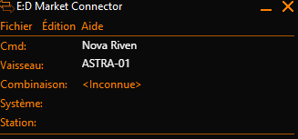
Étape 2 · Ajouter le plugin. Le plugin permet à EDMC de parler à EDTEAM.
- Téléchargez le plugin avec le bouton vert de l'écran (le fichier SYS_EDTEAM.zip).
- Dans EDMC : Fichier › Paramètres, puis l'onglet Plugins.
- Cliquez sur Open Plugins Folder : le dossier des plugins s'ouvre.
- Décompressez-y le dossier SYS_EDTEAM.
- Fermez et relancez complètement EDMC. Le plugin apparaît alors dans la liste.
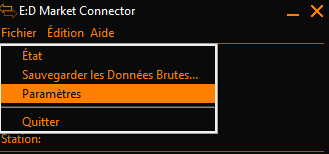
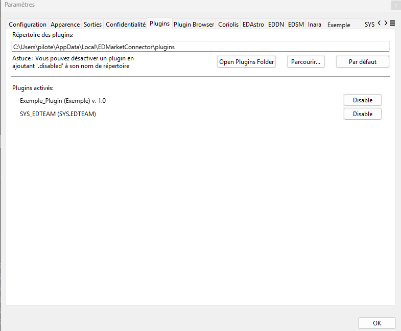
Étape 3 · Coller votre clé. La clé dit à EDTEAM que le jeu qui envoie des données est bien le vôtre. Elle s'affiche sur l'écran : un clic dessus la copie.
- Dans EDMC, ouvrez Fichier › Paramètres, puis l'onglet SYS.EDTEAM. S'il est caché, utilisez les flèches ‹ › à droite des onglets.
- Collez la clé dans le champ Clé d'Accès.
- Cliquez sur OK.
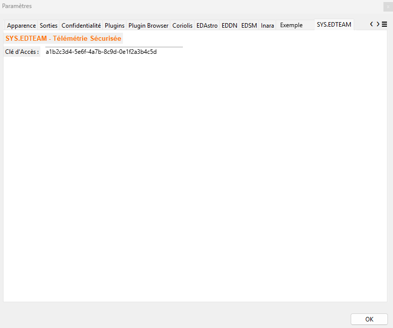
Votre clé est personnelle. Ne la communiquez à personne, ne la publiez jamais sur Discord.
Étape 4 · Redémarrer Elite Dangerous. Le plugin ne lit votre nom de commandant qu'au démarrage du jeu.
- Fermez complètement Elite Dangerous s'il est ouvert.
- Vérifiez qu'EDMC est ouvert.
- Relancez le jeu depuis le bureau Windows (raccourci ou lanceur).
- Entrez dans votre vaisseau (Open, Groupe privé ou Solo) : quelques secondes plus tard, votre nom s'affiche sur le site.
Un simple retour au menu du jeu, ou se déconnecter puis se reconnecter dans le jeu, ne suffit pas. Il faut quitter le jeu complètement, puis le relancer depuis le bureau Windows.
APRÈS LA LIAISON
- Vous jouez seul (ou votre escadron n'est pas sur EDTEAM) : le site vous accrédite comme pilote indépendant, un clic suffit.
- Vous êtes dans un escadron déjà inscrit : demandez son code d'invitation à votre Amiral ou à un officier, et saisissez-le à cet endroit.
- Vous êtes l'Amiral d'un escadron qui n'est pas encore sur EDTEAM : laissez le champ du code vide. Votre escadron est créé, puis soumis à validation.
Rien n'arrive après une minute ? Vérifiez dans l'ordre : EDMC est ouvert · SYS_EDTEAM figure dans l'onglet Plugins · la clé est bien collée · le jeu a été relancé depuis le bureau.
LE QUARTIER GÉNÉRAL
TOUSESCADRON : FIL, PILIER, ÉLANC'est la page d'accueil de l'application : d'un coup d'œil, où en sont votre puissance, votre faction et votre escadron.
Voici le quartier général d'un pilote membre d'un escadron. Les noms et les chiffres de cette image sont fictifs. Un pilote solitaire voit la même page sans les blocs réservés à l'escadron (anecdote, Pilier, Élan) : le fil d'actualités occupe alors toute la largeur.
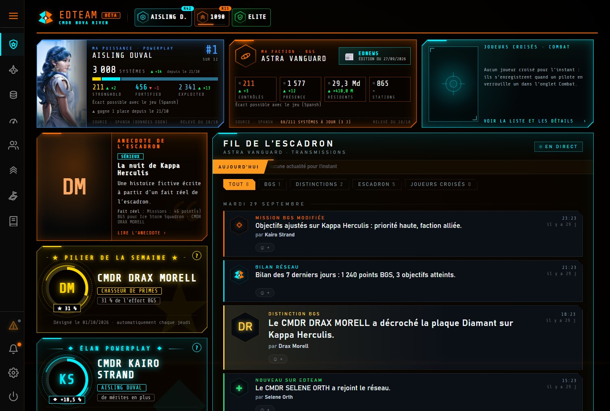
1 2 3 4 5 6 7 8 9- Le menu. Un clic sur ☰ l'ouvre avec les noms : Quartier général, Hangar, Budget, Tableau de bord, Escadron, Engagement, Colonisation.
- Votre en-tête. Votre nom de commandant, votre rang de Powerplay, vos points BGS et votre rang de Fédération ou d'Empire.
- Ma puissance. Votre puissance Powerplay : combien de systèmes elle contrôle (Stronghold, Fortified, Exploited), sa place parmi les 12 puissances et son évolution.
- Ma faction. La faction de votre escadron : systèmes contrôlés, présence, population et stations. Le bouton EDNEWS ouvre la gazette de l'escadron.
- Joueurs croisés. Les joueurs que les pilotes de l'escadron ont verrouillés en combat (onglet Combat du tableau de bord), avec leur vaisseau et l'heure. Un clic ouvre la liste et les détails.
- Anecdote de l'escadron. Une courte histoire écrite par une IA à partir d'un fait réel de l'escadron. Le « fait réel » est toujours indiqué.
- Pilier de la semaine. Le pilote qui a rapporté le plus de points BGS à l'escadron. Désigné automatiquement chaque jeudi.
- Élan Powerplay. Le pilote dont les mérites ont le plus progressé, en proportion de ce qu'il avait déjà. Chacun a sa chance, quel que soit son niveau.
- Le fil de l'escadron. Tout ce qui se passe : nouvelles missions, distinctions, bilans, joueurs croisés. Des onglets filtrent par sujet.
LE TICK
Le tick est la mise à jour quotidienne de la galaxie par le jeu : c'est à ce moment que l'influence des factions change. Le QG affiche en haut un compte à rebours avant le prochain tick (avec une marge d'incertitude de quelques minutes). Pour le BGS, il rythme tout : on regarde ce qui a changé au dernier tick, et ce qu'il reste à faire avant le suivant.
LE FIL DE L'ESCADRON
- Les onglets BGS, DISTINCTIONS, ESCADRON et JOUEURS CROISÉS trient les actualités ; TOUT les montre toutes.
- Le bandeau AUJOURD'HUI en haut fait défiler les nouvelles des dernières 24 heures.
- Sous chaque actualité, un petit bouton permet de réagir avec un tampon, pour féliciter ou encourager.
Les points d'interrogation ? à côté du Pilier et de l'Élan expliquent précisément comment chaque distinction se gagne.
LES DISTINCTIONS : COMMENT ON LES GAGNE
- Le Pilier de la semaine : le pilote qui a rapporté le plus de points BGS pendant la semaine (du jeudi 07:00 UTC au jeudi suivant). Avec ou sans directive de l'Amiral, aucun seuil minimum.
- L'Élan Powerplay : le pilote dont les mérites du cycle ont le plus progressé en proportion de ses mérites de début de cycle. Pour qu'un débutant ne gagne pas grâce à un tout petit gain, le calcul suppose que chacun avait au moins 100 000 mérites au départ.
LE TABLEAU DE BORD EN JEU
TOUS LES PILOTESUn second écran pendant que vous jouez : ce que vous transportez, vos missions, votre minage, vos découvertes et vos combats, en direct.
Tant que le jeu tourne avec EDMC et le plugin, la page TABLEAU DE BORD se remplit toute seule, sans rien cliquer. Un témoin EN DIRECT indique à quand remonte la dernière mise à jour (quelques secondes). Quand vous quittez le jeu, la dernière session reste affichée.
Posez-le sur une tablette ou un second écran : tout s'actualise de lui-même.
COMMERCE : CE QUE JE TRANSPORTE
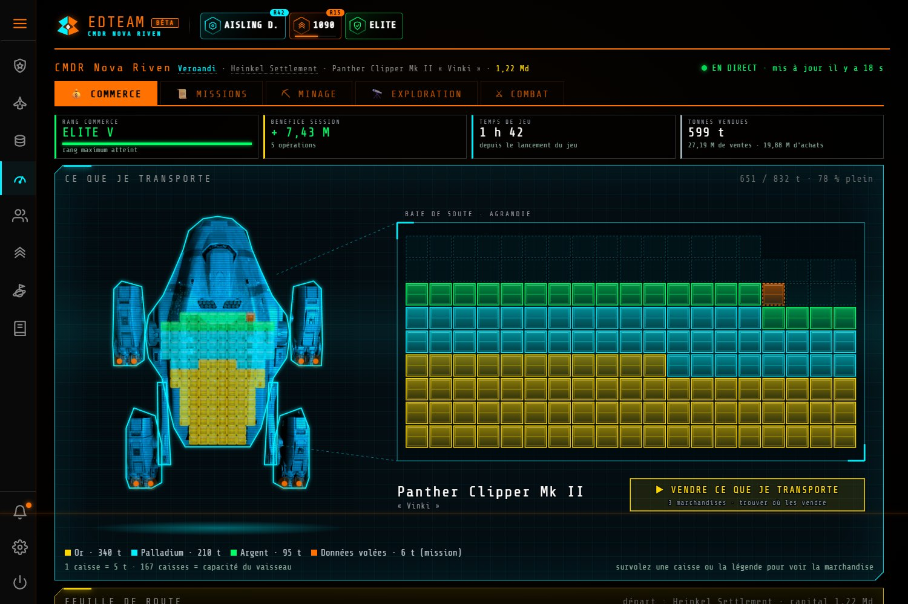
1234567- EN DIRECT. L'état de la liaison avec votre jeu, et le système, la station et le vaisseau où vous êtes.
- Les cinq onglets : Commerce, Missions, Minage, Exploration, Combat.
- Les chiffres de la session : rang de commerce, bénéfice depuis le lancement, temps de jeu, tonnes vendues.
- Votre vaisseau en hologramme, avec votre soute dedans.
- La baie de soute, agrandie : une caisse représente 5 tonnes. Survolez une caisse pour voir la marchandise.
- VENDRE CE QUE JE TRANSPORTE. Cherche pour vous où vendre, parmi les stations autour de vous.
- La légende : une couleur par marchandise, avec les tonnes. Les marchandises de mission sont signalées à part.
- Plus bas, la feuille de route reprend votre trajet : où vous avez acheté, où vous avez vendu, et le bénéfice de chaque opération.
- Seul le bénéfice compte : il s'affiche à côté du montant de chaque vente.
- « Où vendre ? » examine toute la zone, signale les prix inhabituels, propose des aller-retour rentables et le choix orbitale ou planétaire. Les relevés de prix viennent de deux sources croisées.
- Vous jouez depuis un porte-vaisseaux ? Une tournée peut être calculée depuis lui.
MISSIONS : LE PARCOURS LE PLUS COURT
L'onglet Missions classe vos missions en cours par système, dans l'ordre le plus court, pour ne pas faire d'aller-retour inutiles.
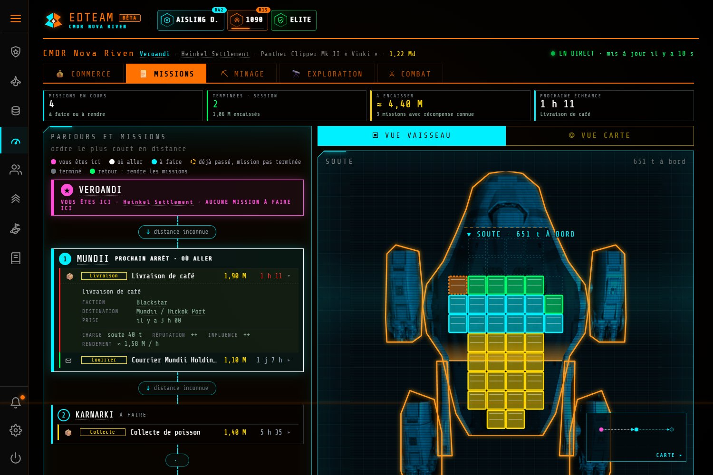
12345- Le résumé : missions en cours, terminées pendant la session, ce qu'il reste à encaisser et la prochaine échéance.
- Parcours et missions. Une légende de couleurs explique chaque point : où vous êtes, où aller, à faire, déjà passé mais mission pas terminée, terminé, retour pour rendre les missions.
- Vous êtes ici. Le système et la station courants, avec les missions à y faire.
- Prochain arrêt. Dépliez une mission pour voir la faction, la destination, la prise, la charge, la réputation et l'influence gagnées, et le rendement par heure.
- Vue vaisseau / vue carte. Basculez entre la soute en hologramme et la carte des missions.
- Vos passagers recherchés sont tamponnés en rouge et passent en premier.
- Les missions de tourisme à destinations multiples sont gérées, avec les passagers à bord.
- Relancer le jeu ne fait pas perdre les détails de vos missions en cours.
MINAGE, EXPLORATION, COMBAT
- Minage : votre session de minage, que vous soyez en vaisseau ou en Rhino (véhicule de surface).
- Exploration : le système où vous êtes, ses corps et leur valeur, et l'exobiologie : les espèces à scanner, avec un livre de collection.
- Combat : vos victoires, vos primes et bons de combat, vos meurtres (à pied comme en vaisseau), et les joueurs que vous verrouillez. Un clic sur un joueur verrouillé montre son vaisseau, sa prime et, s'il est connu, son escadron.
Votre combinaison à pied, vos modules, votre co-pilote et votre chasseur s'affichent aussi dans l'hologramme. Les vaisseaux sans hologramme sont remplacés par une carte.
MON HANGAR
La page MON HANGAR liste tous vos vaisseaux et leur équipement tel que le plugin l'a vu la dernière fois que vous les avez pilotés. Aucune valeur et aucune position de vaisseau ne sont affichées. Au-dessus de la liste, la carte MON FLEET CARRIER montre le système où se trouve votre carrier, son accès aux docks et son prochain saut annoncé (plugin 2.52) ; une case permet de le cacher à votre escadron. La page ESCADRON a trois onglets : SYSTÈMES (les systèmes contrôlés par la faction défendue, avec les colonies et leurs architectes, les systèmes cibles des directives et campagnes actives, la distance depuis votre position ou votre carrier ; un clic sur une ligne ouvre la fiche du système), MEMBRES et FLEET CARRIERS (la liste des carriers de l'escadron : son hologramme, le carrier, son pilote, son système, ses services — réparation, ravitaillement, chantier naval… —, la distance depuis vous et depuis une directive, et un signe orange quand il se trouve dans un système en directive ; filtres et tri).
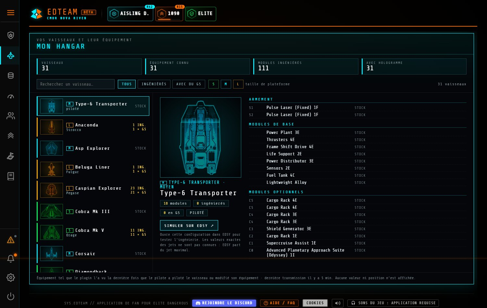
1234- La liste de vos vaisseaux, avec la taille de plateforme (S, M, L), le nombre de modules ingénieurés et ceux de grade 5. Des filtres et une recherche aident à retrouver un vaisseau.
- L'hologramme du vaisseau choisi, et ses chiffres.
- L'équipement : armement, modules de base et modules optionnels, avec les ingénieurs.
- SIMULER SUR EDSY. Ouvre cette configuration dans l'outil EDSY pour tester l'ingénierie.
L'ALERTE COMBAT
Dans le menu, ALERTE COMBAT · ARMER se règle une fois en début de session. Armée, elle signale sur n'importe quelle page qu'un joueur vient d'être verrouillé, pour réagir sans quitter ce que vous faites.
Rien ne s'affiche ? Lancez le jeu avec EDMC ouvert. Si le plugin est à jour et que rien n'arrive, redémarrez EDMC puis changez de système en jeu. Voir le chapitre Dépannage.
BGS ET CAMPAGNES
MEMBRE D’ESCADRONVoir ce que devient la galaxie pour les factions que votre escadron soutient ou combat, et ce que chacun y a fait. Aucun objectif chiffré : c'est le jeu qui juge.
Tick : la mise à jour quotidienne de la galaxie. C'est là que les résultats tombent.
Directive : une consigne de l'Amiral sur un système. HAUSSE : faire monter une faction. BAISSE : faire baisser un rival. GUERRE et ÉLECTION : aider une faction dans un conflit.
Campagne : un objectif d'ensemble qui regroupe des directives (et des missions Powerplay et de colonisation), avec une priorité (critique, haute, normale) et une échéance.
LE PRINCIPE
- L'Amiral choisit où jouer (les directives). Vous jouez normalement : le plugin reconnaît vos missions, vos combats en zone de conflit, vos bons de combat, votre commerce, vos données d'exploration vendues, votre colonisation et vos meurtres (sous une directive de baisse), et les rattache aux directives. Rien à déclarer.
- Aucun objectif chiffré, aucun pourcentage d'avancement. Le site ne dit jamais « il vous reste X % à faire ». C'est le résultat réel dans le jeu qui compte : la couleur d'une ligne dit ce qu'a fait l'influence au dernier tick.
- Aucune obligation. Rien ne marque « à faire » ou « quota non atteint » : les pastilles montrent ce que vous avez déjà fait depuis le dernier tick, comme un repère.
La page ENGAGEMENT rassemble tout cela : les campagnes de l'escadron, vos pastilles, votre progression.
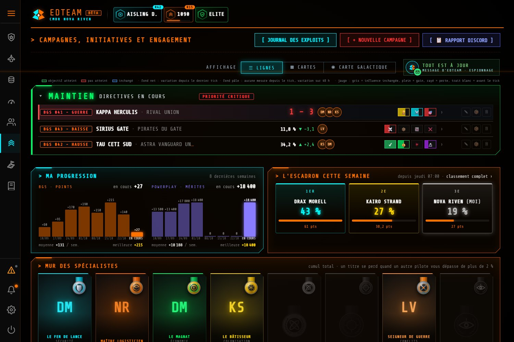
1234567891011- Les boutons du haut. JOURNAL DES EXPLOITS (tout ce que l'escadron a fait). Pour l'Amiral : NOUVELLE CAMPAGNE et RAPPORT DISCORD.
- L'affichage : en lignes, en cartes, ou sur la carte galactique.
- Le message d'EDTEAM : une idée utile du moment (une mission de repérage, par exemple), ou « Tout est à jour ».
- Une campagne : son nom, sa priorité et son échéance. Un clic la replie.
- Une directive : son numéro et son type (HAUSSE, BAISSE, GUERRE, ÉLECTION), le système et la faction visés. Un clic ouvre son détail.
- Le résultat du jeu. L'influence actuelle de la faction, et son évolution depuis le tick. Vert : va dans le sens de la directive ; rouge : à contre-sens, c'est là que l'aide est utile ; bleu : inchangé ou pas encore mesuré. Une couleur pâle veut dire « pas de mesure depuis le tick ». Pour une guerre ou une élection, c'est le score.
- Les pilotes qui jouent sur la directive.
- Vos pastilles. Une par activité qui compte pour cette directive : elles se remplissent selon ce que vous avez fait depuis le dernier tick. Un ✓ veut dire « plein effet atteint ».
- Ma progression : vos points BGS et vos mérites Powerplay sur 8 semaines.
- L'escadron cette semaine : la part de chaque pilote depuis jeudi 07:00.
- Le mur des spécialistes : sept titres au cumul total, par spécialité (sécurité, logistique, économie, colonisation, conflits, renseignement…).
LES PASTILLES : QUELLES ACTIVITÉS ?
- HAUSSE : Missions (logistique), Économie (bénéfices du commerce et du minage), Sécurité (primes et bons de combat), Science (données d'exploration).
- BAISSE : Meurtres, Contrebande, Ventes à perte, Missions échouées.
- GUERRE : Victoires en zone de conflit, Bons de combat, Missions militaires.
- ÉLECTION : Logistique, Commerce, Science.
Guerre et élection : pas de rendement décroissant, donc pas de quota. Un palier vous situe par rapport aux pilotes de l'escadron qui ont agi : lancé, bon (au moins la médiane) ou excellent (au moins le double de la médiane).
LE DÉTAIL D'UNE DIRECTIVE
Cliquez sur une directive : une fenêtre montre tout ce qui la concerne.
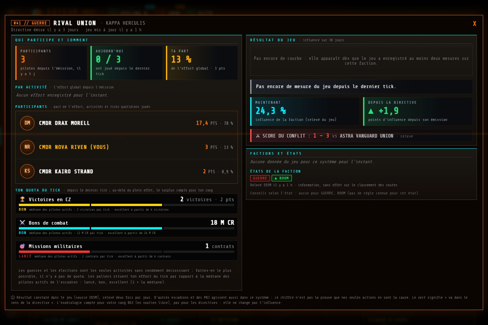
12345678- Le titre : le numéro, le type, la faction et le système, et la date du dernier relevé du jeu.
- Qui participe et comment : le nombre de pilotes depuis l'émission, ceux qui ont joué depuis le dernier tick, et votre part de l'effort.
- Les participants : les points de chacun et leur poids dans l'effort.
- Votre quota du tick : une ligne par activité, avec votre action depuis le dernier tick, la médiane des pilotes actifs et votre palier (guerre, élection) ou votre marge avant que l'effet diminue (hausse, baisse).
- Le résultat du jeu : la courbe d'influence sur 30 jours (elle apparaît dès deux mesures).
- Maintenant et depuis la directive : l'influence actuelle de la faction, et ce qu'elle a gagné depuis l'émission.
- Le score du conflit, pour une guerre ou une élection.
- Les factions et leurs états (Boom, Guerre civile, Famine…), avec des conseils selon l'état.
Le vert veut dire « va dans le sens de la directive ». D'autres escadrons et des PNJ agissent aussi dans le système : le chiffre n'est pas la preuve que vos seules actions en sont la cause. Le résultat du jeu est relevé deux fois par jour.
LES AIDES DE LA FENÊTRE
Selon le type de directive, des boutons vous disent où agir le plus efficacement :
- HAUSSE : « Où vendre ? » (la route commerciale la plus rentable), « Où vendre l'exploration ? », « Où rendre les bons ? » (bons de combat) et la Défense d'installation (« Où défendre ? »), quand la faction est en Boom.
- BAISSE : « Route de contrebande » vers le marché noir de la faction, « Où déstabiliser ? » et « Où vendre à perte ? ».
- ÉLECTION : « Où vendre ? » aussi, car le commerce et les ventes de données d'exploration y comptent.
- Un aller-retour dont le retour sert une autre directive est mis en évidence (« route double »).
GUERRES ET ÉLECTIONS
Quand une guerre ou une élection commence ou se termine sur une faction suivie par une directive, une fenêtre plein écran l'annonce, avec sa musique : une fois par événement et par appareil, pendant 24 h. Un bandeau reste au-dessus de la ligne jusqu'au tick suivant. Les scores s'affichent en vert (gagne), rouge (perd) ou bleu (égalité).
LE JOURNAL DES EXPLOITS
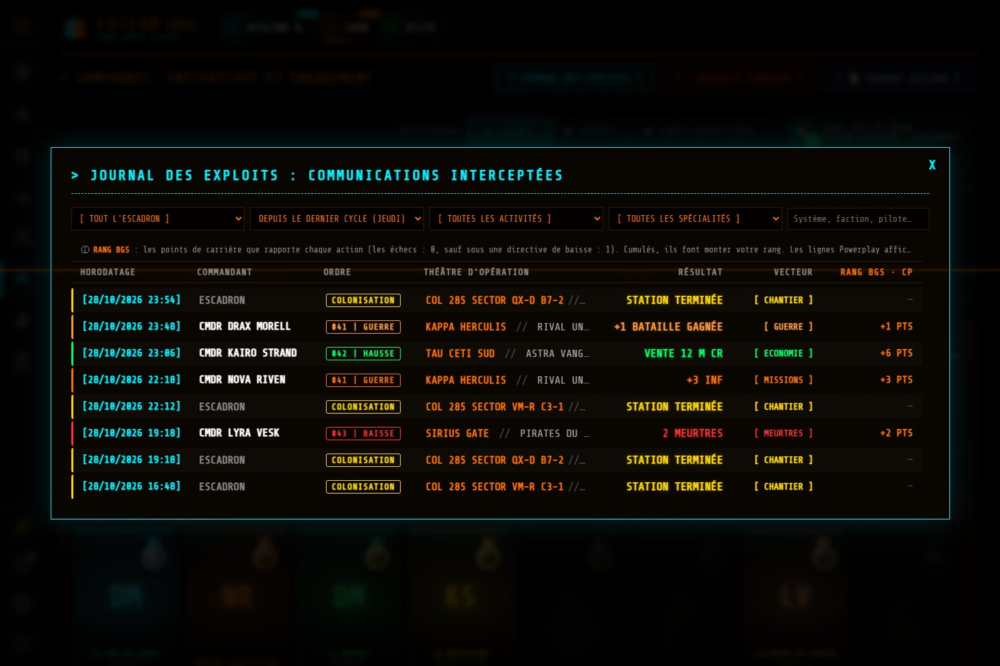
123456- L'heure de l'action (UTC) et son auteur.
- Le pilote (ou l'escadron pour la colonisation).
- L'ordre : la directive concernée.
- Le théâtre : le système et la faction.
- Le résultat : ce qui s'est passé.
- Les points de rang BGS que chaque action rapporte.
- Des filtres permettent de chercher par pilote, activité, spécialité ou texte, depuis le dernier cycle (jeudi).
- Les actions rapprochées (meurtres, piratages, missions échouées) sont regroupées sur une ligne.
- Le rang BGS (pastille de l'en-tête) monte avec ces points. Cliquez dessus pour voir votre carrière.
LA CARTE GALACTIQUE DES CAMPAGNES
Le troisième affichage place les systèmes des campagnes sur la carte de la galaxie : où agir et ce qui s'approche. Un filtre « À renforcer » éclaire les systèmes rouges où presque personne n'a joué depuis le tick. Un système ennemi nouveau est marqué d'une alerte. Clic droit sur un système : son nom est copié, prêt à coller dans le jeu.
LA MISSION DE REPÉRAGE : L'ESPION
Les données d'un système se mettent à jour quand un pilote s'y rend. Le message d'EDTEAM vous propose des systèmes à visiter ; en les relevant, vous gagnez un point BGS et progressez vers la distinction L'ESPION. Les systèmes en Boom de vos directives de hausse y figurent aussi, pour y repérer les installations.
POWERPLAY
TOUS LES PILOTESSuivre votre puissance, vos mérites et votre progression, sans compter à la main.
Le plugin relève vos mérites Powerplay et votre puissance. Le site en déduit votre cycle (du jeudi au jeudi), votre progression et votre place parmi les pilotes alignés du réseau.
- Au QG, la carte MA PUISSANCE montre votre puissance : ses systèmes (Stronghold, Fortified, Exploited), sa place parmi les 12 puissances et son évolution.
- Dans l'en-tête, la pastille de gauche donne votre puissance et votre rang. Un clic ouvre la fenêtre ci-dessous.
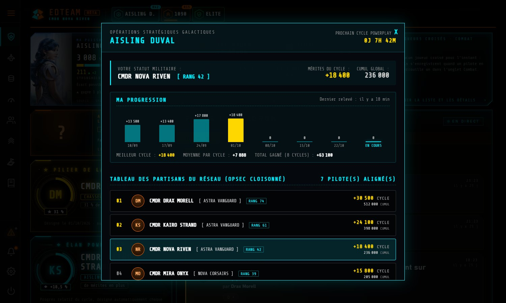
1234- La puissance et le compte à rebours du prochain cycle.
- Votre statut : votre rang, vos mérites du cycle et votre cumul global.
- Ma progression : vos mérites sur 8 cycles, votre meilleur cycle et votre moyenne.
- Le tableau des partisans : les pilotes du réseau alignés sur la même puissance, avec leur cycle et leur cumul.
LES DISTINCTIONS ET LES CAMPAGNES
- L'Élan Powerplay récompense chaque semaine la plus belle progression en proportion (voir le chapitre QG).
- Une campagne peut contenir des missions Powerplay : elles apparaissent avec leur barre du jeu (Inoccupé, Exploité, Consolidé, Défendu), la position au dernier tick (▼ blanc) et maintenant (▲ orange).
- Sous une directive d'ATTAQUE, affaiblir un rival sape son Powerplay.
Les chiffres de systèmes viennent de la base communautaire Spansh, mise à jour quand un joueur visite un système : un petit écart avec le jeu est possible. Le panneau Powerplay du jeu fait foi.
COLONISATION
TOUS LES PILOTESSavoir où en sont les chantiers de l'escadron et ce qu'il faut y apporter, sans tableur.
La page COLONISATION suit les chantiers de construction (Orbital Construction Site…) à partir de ce que les plugins ont relevé : chantiers consultés, livraisons, revendications. Vos livraisons apparaissent dans la minute.
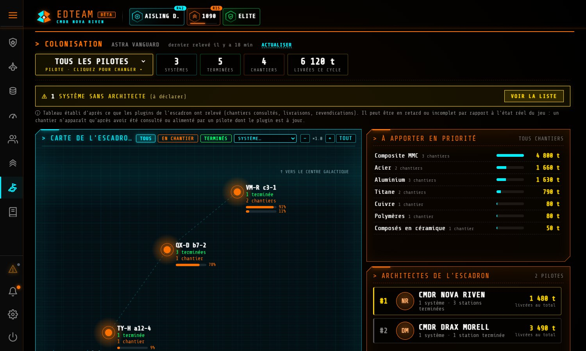
123456- Le filtre de pilote. Tous les pilotes, ou un seul : pour voir vos propres chantiers et livraisons.
- Les chiffres : systèmes, constructions terminées, chantiers en cours et tonnes livrées ce cycle.
- Systèmes sans architecte. Un système colonisé non attribué : le pilote qui l'a fondé peut se déclarer architecte.
- La carte de l'escadron : chaque système avec son avancement. Zoom et filtres (en chantier, terminés).
- À apporter en priorité : les marchandises qui manquent le plus, tous chantiers confondus.
- Les architectes : qui a fondé quoi, et combien de tonnes ont été livrées.
- Un clic sur un système ouvre son profil : la carte du système, ses installations (avec leur type), les besoins de chaque chantier et le journal des livraisons, que l'on peut feuilleter et filtrer.
- La colonisation compte pour votre rang BGS : chaque livraison rapporte des points.
- Certains besoins peuvent être dépassés : un chantier accepte parfois plus que ce qui est demandé.
Le tableau n'est pas un reflet en temps réel du jeu : un chantier n'apparaît qu'après avoir été consulté ou alimenté par un pilote dont le plugin est à jour. Il peut donc être en retard ou incomplet.
Vous êtes le premier à fonder un système ? Utilisez SE DÉCLARER ARCHITECTE. Les systèmes sans architecte sont listés pour qu'on les attribue.
BUDGET PERSONNEL
TOUS LES PILOTESComprendre d'où viennent vos crédits et où ils partent, cycle par cycle. Strictement personnel.
La page BUDGET est visible par vous seul, même de votre Amiral. Elle est construite à partir de ce que le plugin a relevé dans vos journaux de jeu.
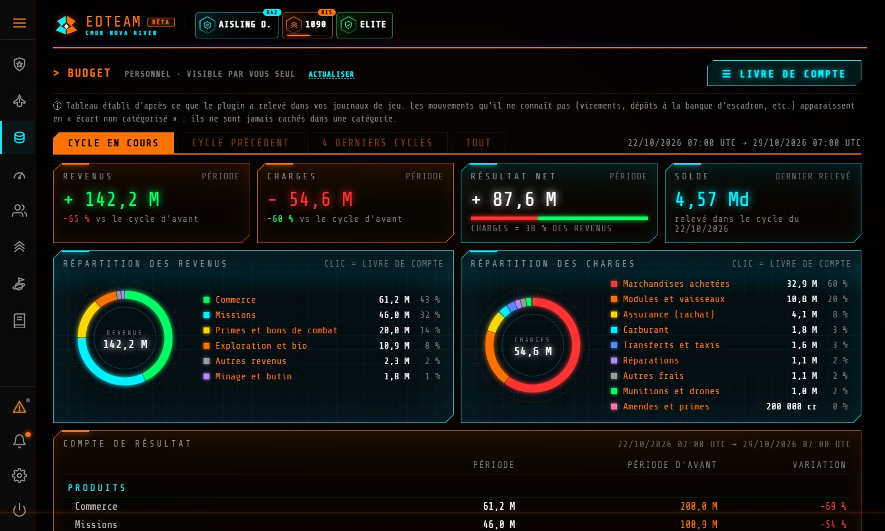
12345- LIVRE DE COMPTE. Chaque mouvement, avec filtres (revenus, charges, catégorie, texte). Export possible en fichier CSV.
- La période : cycle en cours, cycle précédent, 4 derniers cycles, ou tout. Un cycle va du jeudi 07:00 UTC au jeudi suivant.
- Les quatre tuiles : revenus, charges, résultat net et solde au dernier relevé, avec la comparaison au cycle d'avant.
- La répartition des revenus (commerce, missions, primes, exploration…) et des charges (achats, modules, assurance, carburant…). Un clic ouvre le livre de compte filtré.
- Le compte de résultat : produits et charges, avec la période d'avant et la variation.
Les mouvements que le plugin ne connaît pas (virements, dépôts à la banque d'escadron…) apparaissent en « écart non catégorisé ». Ils ne sont jamais cachés dans une catégorie : le total reste juste.
L'ESCADRON
MEMBRE D’ESCADRONVoir ses camarades, leur activité, leurs titres, et retrouver le code d'invitation.
La page ESCADRON réunit les chiffres de l'escadron et ses pilotes, en cartes. Elle est réservée aux membres d'un escadron validé.
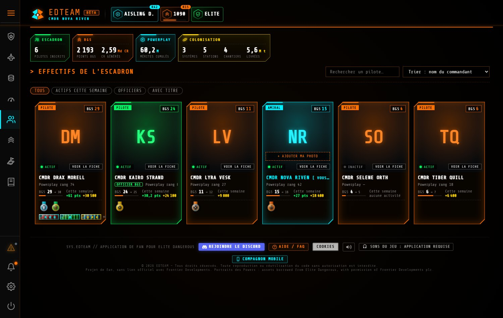
123456- Les chiffres : pilotes inscrits, points BGS et crédits générés, mérites Powerplay cumulés, colonisation.
- Recherche et tri des pilotes.
- Les filtres : tous, actifs cette semaine, officiers, avec un titre.
- Une carte de pilote : son rôle (pilote, officier, Amiral), ses points BGS, son activité de la semaine, son rang Powerplay et ses distinctions.
- + AJOUTER MA PHOTO. Votre photo de commandant, visible uniquement par votre escadron.
- VOIR LA FICHE. Le détail du pilote : titres, distinctions, hangar.
- Les recrues sont signalées dans la liste.
- Le code d'invitation de l'escadron, que l'Amiral et les officiers donnent aux nouveaux pilotes, se trouve sur cette page.
- Le mur des spécialistes (page Engagement) attribue sept titres au cumul total. Un titre se perd quand un autre pilote vous dépasse de plus de 2 %.
Aucune distinction ne compte une activité qui n'a pas eu lieu : tout est calculé à partir des actions que le plugin a relevées.
ALLIÉS ET INVITATIONS
SOLITAIREMEMBRE D’ESCADRONParticiper à la campagne d'un autre escadron, sans en faire partie.
Un Amiral peut inviter un pilote (avec ou sans escadron) ou tout un escadron allié à participer à l'une de ses campagnes. Vous aidez ; vous ne commandez pas.
RECEVOIR UNE INVITATION
- Le bouton ENGAGEMENT du menu clignote, et une fenêtre plein écran s'ouvre avec l'invitation.
- Choisissez ACCEPTER, REFUSER ou PLUS TARD. Si vous choisissez plus tard, cliquez sur le bouton clignotant pour la rouvrir.
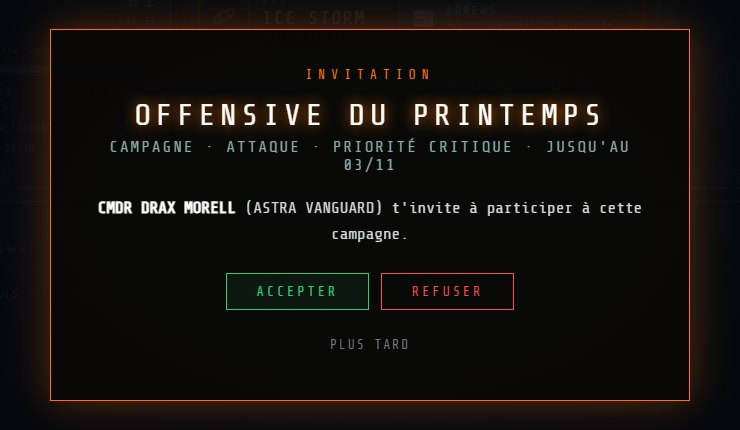
PARTICIPER
Si vous êtes solitaire, la page ENGAGEMENT apparaît avec un seul bloc : CAMPAGNES AUXQUELLES JE PARTICIPE. Vous y voyez les campagnes où vous êtes invité, avec leurs directives, leurs systèmes, leurs évolutions, la carte galactique et les mêmes fenêtres de détail que les membres.
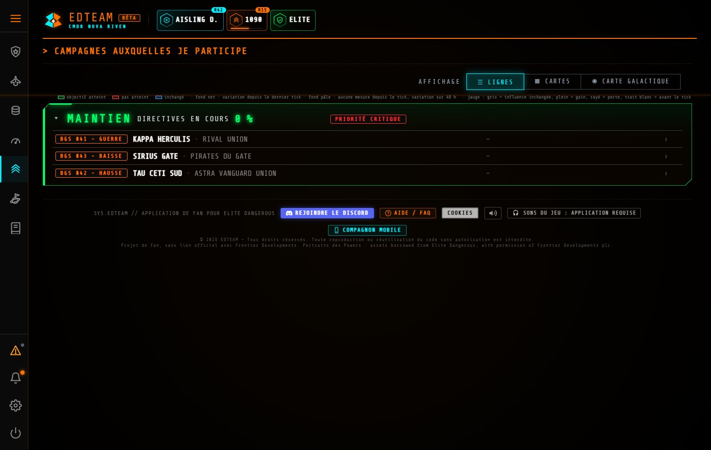
- Vos actions comptent dans la campagne et apparaissent dans son journal, avec une pastille qui vous distingue : SOLITAIRE, ou ALLIÉ · le nom de votre escadron.
- Vous ne voyez pas la vie interne de l'escadron hôte (son journal général, le mur des spécialistes). Seule la campagne vous est ouverte.
- Si vous êtes membre d'un escadron validé, vous gardez vos propres campagnes, et un bloc CAMPAGNES ALLIÉES s'ajoute en dessous, en lecture seule.
- L'Amiral hôte peut vous retirer de la campagne à tout moment.
Les contributions Powerplay et de colonisation d'un invité ne comptent pas dans les missions de l'escadron hôte. Elles restent dans vos propres pages.
LE TÉLÉPHONE
TOUS LES PILOTESGarder son escadron et ses chiffres dans la poche, quand on n'est pas devant son PC.
Ouvrez le site sur votre téléphone : il bascule tout seul vers une version adaptée, le compagnon mobile. Vous pouvez aussi l'installer comme une application depuis le menu de votre navigateur (« Ajouter à l'écran d'accueil »). Le bouton COMPAGNON MOBILE en bas des pages du site y mène.
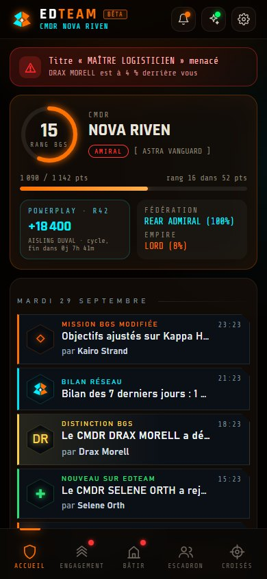
123456- La cloche des nouveautés, et le réglage de votre compte.
- Les alertes : par exemple un titre menacé par un camarade.
- Votre commandant : rang BGS, escadron, progression.
- Powerplay, Fédération, Empire : vos rangs d'un coup d'œil.
- Le fil de l'escadron : les dernières actualités, avec un aperçu. Un toucher ouvre la fenêtre complète.
- Les cinq onglets : Accueil, Engagement (vos campagnes), Bâtir (colonisation), Escadron, Croisés (joueurs croisés).
- Le journal des exploits est complet sur mobile, avec les jauges et les fenêtres des directives et des missions Powerplay comme sur PC.
- Le repérage et les joueurs croisés sont aussi là.
- Les sons du jeu demandent l'application installée.
POUR L'AMIRAL
AMIRALLancer une campagne, y ranger les directives, inviter des alliés et garder l'escadron informé.
CRÉER UNE CAMPAGNE
Sur la page Engagement, cliquez sur + NOUVELLE CAMPAGNE. Seul l'Amiral peut en créer.
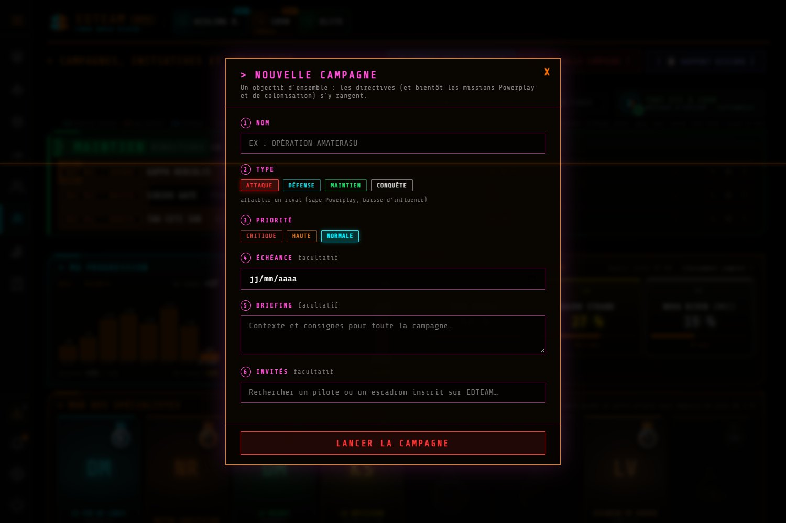
123456- Nom. Par exemple « Opération Amaterasu ».
- Type. ATTAQUE (affaiblir un rival, sape son Powerplay), DÉFENSE, MAINTIEN ou CONQUÊTE.
- Priorité. Critique, haute ou normale : elle ordonne les campagnes.
- Échéance, facultative.
- Briefing, facultatif : le contexte et les consignes, que chaque pilote relit en un clic (icône 💬 de la campagne).
- Invités, facultatif : recherchez un pilote ou un escadron inscrit sur EDTEAM pour l'inviter tout de suite.
AJOUTER DES DIRECTIVES
- Dans la campagne, le bouton ＋ ajoute une directive ou une mission : choisissez le système, la faction visée et le type (hausse, baisse, guerre, élection).
- Vous pouvez glisser-déposer les campagnes pour les réordonner, et choisir l'ordre des systèmes.
- Les icônes de la campagne : 💬 le briefing, 📖 son journal, ✉ inviter, ＋ ajouter, ✎ modifier, 📦 archiver, 🗑 supprimer.
INVITER DES ALLIÉS
- Cliquez sur ✉ dans la campagne (ou remplissez l'étape 6 à la création).
- Recherchez un pilote (avec ou sans escadron) ou un escadron inscrit.
- L'invité reçoit une fenêtre plein écran et son menu clignote. Vous voyez son état : proposée, acceptée, refusée ou retirée.
Un pilote invité ne voit que cette campagne. Un escadron allié l'ouvre à tous ses membres. Les actions des invités apparaissent dans le journal de la campagne (📖), avec leur pastille.
RECRUTER ET GÉRER
- Le code d'invitation de l'escadron est sur la page Escadron : donnez-le aux nouveaux pilotes.
- Les initiatives : vous choisissez comment les pilotes peuvent lancer leurs propres objectifs (LIBRE, avec VALIDATION, ou DÉSACTIVÉ).
- RAPPORT DISCORD : un rapport de l'Amirauté prêt à coller sur votre Discord.
- Un escadron neuf doit être validé par l'équipe EDTEAM pour ouvrir les pages Escadron et Engagement. Tant qu'il ne l'est pas, ses pilotes sont traités comme des solitaires.
LA SALLE DE COMMANDEMENT
Les Amiraux et les officiers disposent d'une salle de commandement (menu), pour suivre l'escadron et ses missions d'un seul regard. Les officiers y voient les mêmes outils de suivi.
DÉPANNAGE
TOUS LES PILOTESLes petits problèmes les plus fréquents, et comment les régler.
Mon nom de commandant n'arrive pas sur le site
Le tableau de bord affiche « Aucune session reçue »
Le plugin ne semble pas à jour
Je ne vois pas les pages Escadron et Engagement
J'ai changé d'escadron
Ma carte « Ma faction » dit « pas de faction en jeu »
Les chiffres de systèmes ne sont pas ceux du jeu
L'écran se vide, ou une zone disparaît
Je n'entends pas les sons du jeu
Une question que ce manuel ne règle pas ? Venez sur le Discord : décrivez ce que vous voyez, avec une capture d'écran, sans y mettre votre clé EDMC.